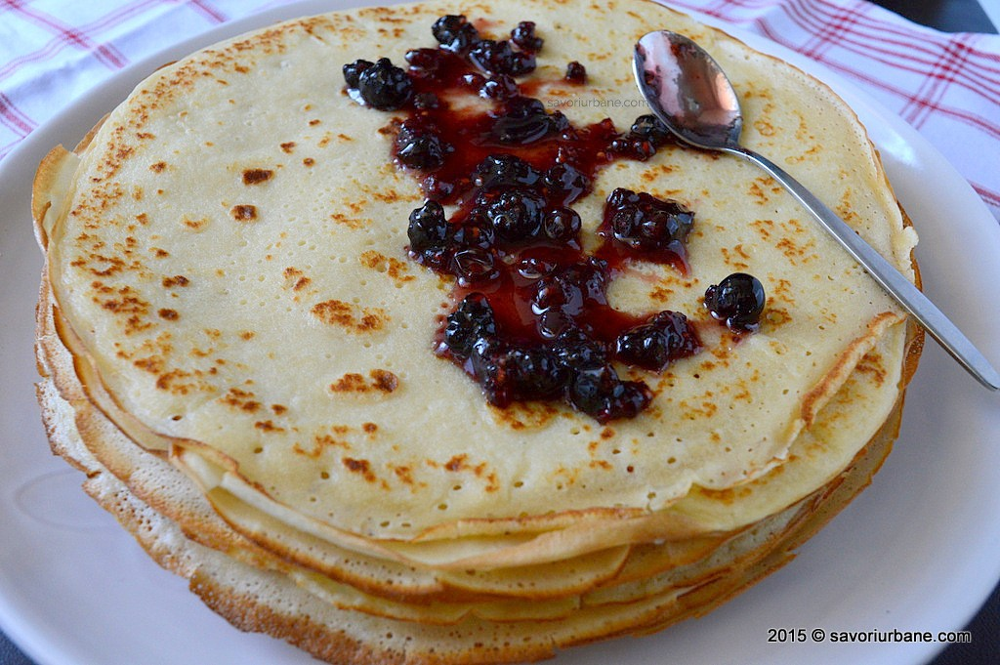

Clatite

Description
These clatitos best clatitos.
There is nothing better than these clatitos.
All that eat clatitos will have eternal glory.
Ingredients
- 500ml lapte
- 280g faina
- 100ml apa minerala
- 50g unt topit
- 6 oua
- 1 linugrita pasta de vanilie/esenta de vanilie
- 1 praf de sare
- Se adauga 1 lingurita de sare si 2 linguri de zahar.
- Se amesteca bine pana se obtine o masa omogena.
- Faina se adauga treptat
- Se amesteca continuu pana se obtine un aluat de o consistenta groasa.
- Dupa ce s-a adaugat toata faina, se incorporeaza treptat laptele (este important sa amesteci continuu, pentru a evita cocoloasele)
- La final, se adauga ulei si apa. Aluatul trebuie sa fie fara cocolase, matasos si lichid.
- Daca iti plac clatitele mai groase, poti lasa aluatul vreo jumatate de ora in frigider, sa se "odihneasca". Eu prefer clatitele subtiri si fine, asa ca le prepar imediat ce aluatul este gata.
- Urmatoarea etapa este foarte importanta. Pentru pregatirea clatitelor este nevoie de o tigaie buna sau una speciala pentru clatite.
- Se incinge tigaia si se unge cu putin ulei sau unt ( nu folosi foarte mult ulei sau unt, sa nu iasa clatitele unsuroase ). Tinand tigaia ridicata de pe foc, cu ajutorul unui polonic sau cani, se toarna aluatul. Tigaia se roteste pe cerc in asa fel ca aluatul sa acopere uniform toata suprafata. Apoi, se pune tigaia inapoi deasupra focului, care trebuie sa fie potrivit.
- Cand suprafata aluatului isi pierde luciu, iar marginile clatitei devin aurii, e un semn ca trebuie intoarsa de pe o parte pe alta.
- Cu ajutorul unei spatule se intoarce clatita. Se caleste cateva secunde si se scoate de pe foc.
- Daca nu folosesti o tigaie speciala pentru clatite ci una obisnuita si observi ca aluatul se lipeste de tigaie, incearca sa ungi tigaia cu ulei de fiecare data cand torni aluatul, daca nici acest truc nu te ajuta, ar fi bine sa schimbi tigaia.
- In timp ce prajesti clatitele, daca simti ca aluatul s-a ingrosat il poti dizolva cu un pic de apa.
- Clatitele se pot unge cu miere, cu orice fel de dulceata, cu crema de ciocolata, cu branza sau cu orice umplutura atat sarata, cat si dulce. Ele se pot adapta foarte usor oricarui moft :)
- Baga la matz!!!